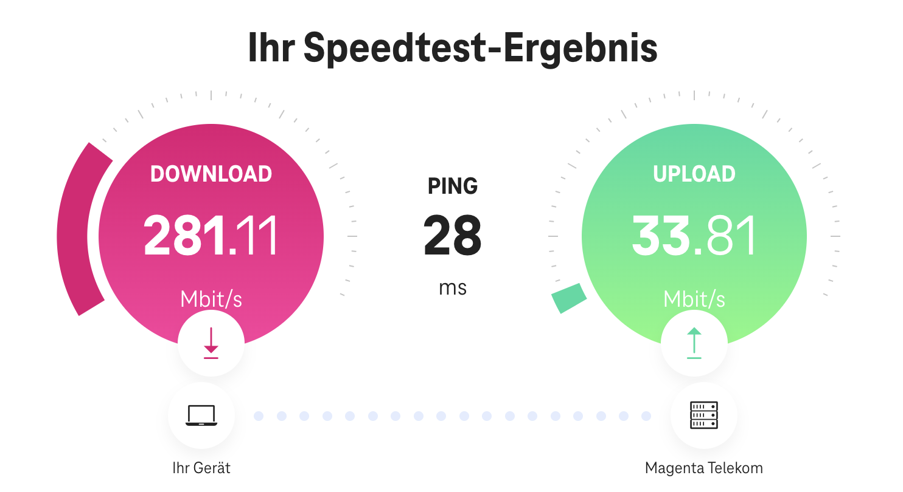
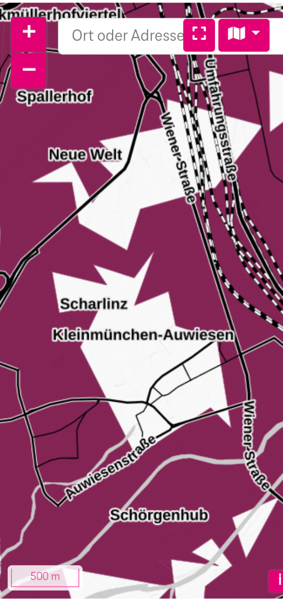

Hallo ich bin seit Samstag also Besitzer einer Magenta Outdoor Antenne plus dazugehörigen Vertrag. Plus. Sechs Monate gratis. Doch der Technik HoTline wurde mir schon gesagt ja an ihrem Standort die 600 Mbits wird schwer aber 300 Mbits sollten möglich sein. Jetzt hab ich das Teil zu Hause. Und musste zu meinem Bedauern feststellen. Wir sind meilenweit/Kilometer weit von den Minimum 300 mbits entfernt. Das gute Modell hat teilweise Probleme überhaupt ein 5G Netz zu finden. Laut Software schwankt wenn dann das 5G gefunden hat zwischen drei Balken und null Balken.
Das wäre ja alles noch kein Problem.
Doch egal wo ich das Modem in der Wohnung/Balkon positioniere mehr als 80-100 Mbits schafft die Leitung leider nicht.
Den besten Wert habe ich geschafft am Fensterbrett im Schlafzimmerfenster.
Da haben wir dann stabile 100-150 zusammengebracht. Wo ich mich auch noch frage dann müsste ich mein ganzes Netzwerk noch umbauen.
Mein Problem ist es eigentlich folgendes.
Mein alter Internetanbieter hat mir heute erklärt aufgrund der Netzüberlastung ist weder eine Vertragsverlängerung noch ein Neuabschluss bei Ihnen möglich.
Deswegen bin ich heute in den Magenta Shop. Nachdem ich am Freitag noch mit der Technik Hotline telefoniert habe. Und dachte mir bevor ich gar kein Internet habe 300 Mbits sind doch auch schön.
Für mich selber habe ich folgende Rechnung aufgemacht.
19 € Aktivierungsgebühr sechs Monate null Euro Grundgebühr und 18 Monate 37 € ergibt nach 24 Monaten 666 €
Normalerweise würde ich jetzt sagen okay ich bin alt genug ich weiß wenn ich ein Handyvertrag eingehe habe ich 24 Monate Bindung. Doch ich glaube mit diesen 80-100 Mbits und dann dauernden Aussetzer beim IP TV werde ich auf Dauer nicht glücklich.
Deswegen wie schon oben gesagt falls Sie jemand von Magenta mit liest oder vielleicht müssen die anderen User was. Wie ist das wenn man jetzt diesen bösen Fehler gemacht hat. Das Teil im Shop gekauft hat. Und am Ende der größten Ballungszentren Österreichs 4030 Linz dann zu Hause feststellen muss ja ich wohne in einen Funkloch.
So sieht übrigens das aus. Was eure Software am Modem selber anzeigt.

Interessant ist ich hab jetzt um 22. September um kurz vor 1:00 Uhr also 0:57 Uhr noch mal ein Test gemacht wenn die Funkzelle nicht ausgelastet ist und alle Schlaf bekomme ich gerade mal 281 hin.
Zu meiner Frage von hin ich kann mir jetzt die 5G Karte für mein Wohngebiet rausgesucht. Und hab eingestellt 5G Only. Wie kann man so ein Riesenloch mitten in Linz produzieren?

Ich finde es wirklich sehr schade, dass du scheinbar in einem Funkloch wohnst und leider nicht die gewünschte Performance erreichen kannst. 😔 Solche Funklöcher können aus verschiedenen Gründen entstehen. Meistens liegt es jedoch an den baulichen Gegebenheiten vor Ort. 🏢 📶
Liebe Grüße, JD.
{kind=link}
{kind=link}
{kind=link}